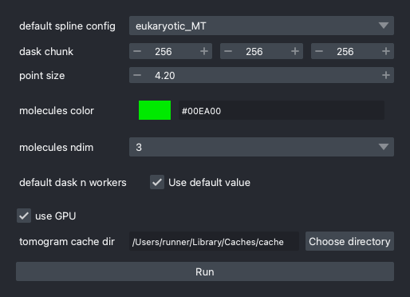

Basics
Before start analyzing data, here's the basics of what you should know.
Components
A Tomogram is a data structure with following information:
- Image Data: a 3D array of the actual image data. this is not necessarily loaded into memory; by default, image data is in a memory-mapped state, which means that the data is read from the disk only when it is needed.
- Image metadata: voxel size, missing wedge, path to the data source, etc. - Multiscale images: a list of images with different binning factors. For example, you can have a tomogram with 4×4×4 and 2×2×2 binned images and switch between them for different purposes (without actually saving them as separate image files).
A Tomogram is connected with following components:
Spline: a piecewise cubic curve that represents the center line of a cylindric structure. A spline is defined by a set of the coefficients of the curves, so that it is very hard to directly interpret the internal data. However, you can easily sample points along the spline, differentiating the spline, and so on. Incylindra, many local properties and global properties are also stored in theSplineobject.Molecules: a collection of molecules. This class is directly imported from acryo. AMoleculesobject is a collection of 3D points, 3D rotations and scalar features for each molecule.
Coordinate Systems
Origin
The corner pixel of an image is the origin of the coordinate system. If a molecule is located at (0, 0, 0), it means that the center of the molecule is at the center of the pixel at the corner.
Ordering
Following the convention of napari and acryo, the 3D coordinates are stored in
(z, y, x) order.
Why not (x, y, z)?
The (z, y, x) order is more natural in the mathematical perspective. A matrix is
indexed by (row, column), which corresponds to (y, x). Therefore, if you have a
3D array arr and a molecule at position (z, y, x), you can access the value
of the molecule by arr[z, y, x].
Therefore, if you have a 3D image img, img.shape[0] is the size of z axis. If a list
of points is stored in a (N, 3) array points, points[:, 0] is the list of z
coordinates.
Coordinates of subtomograms
Subtomograms sampled from the tomogram also have (Z, Y, X) coordinates, but the origin and the direction of the axes are different from the original tomogram.
The origin of the subtomogram is defined so that the center of the subtomogram is at the position of the corresponding molecule in the original tomogram.
The direction of the axes depends on the rotation of molecules.
-
If the molecules are initialized on the surface of a cylinder using
map_monomers, ormap_along_pf, the Y axis is parallel to the spline and the Z axis is parallel to the vector from the spline to the molecule. -
If the molecules are initialized along a spline using
map_along_spline, the Y axis is parallel to the spline and the Z axis is rotated so that it satisfies the twist parameter of the spline.
Manual and Programmatic Operations
Owing to magicgui and magic-class, all the operations can be done either manually
or programmatically. For example, clicking the File > Open image item will open a
dialog for you to select an image file, scale and so on. This function can also be
called programmatically by ui.open_image(...).
Throughout this documentation, you'll find following notations:
API: ui.<method-name>
GUI: XXX > YYY or maybe some shortcut keys
These notations tell you how to do the same thing programmatically or manually. You can also open the command palette (Ctrl+P) to search for the operation.
Macro Recording
Since all the manual operations can be described as function calls, magic-class
automatically record all the operations you have done. Macro recording starts when
you opened an image and will be refreshed when another image is opened or the session
is initialized. This "macro recording" feature will make your data analysis
reproducible and shareable.
You can see the recorded macro script in Others > Macro > Show macro or by
Ctrl+Shift+M.
Project Files
A session of analysis can be saved as a project file. A project file is a collection of files needed to recover the current GUI state. Once a project is saved, you can resume the analysis or view the results by loading the project file.
Working with Other Softwares
As data analyses of electron microscopy is a complicated process, you may need to
combine many softwares together. cylindra provides functions to read or convert
components such as Spline and Molecules objects for other softwares. If you find
that some softwares would be nice to be supported but not currently, please open an
issue for the feature request or submit a pull request to the
repository.
Configure Global Variables
GUI: Others > Configure cylindra

Parameters in this dialog will be used across different sessions, but does not affect the calculation results.